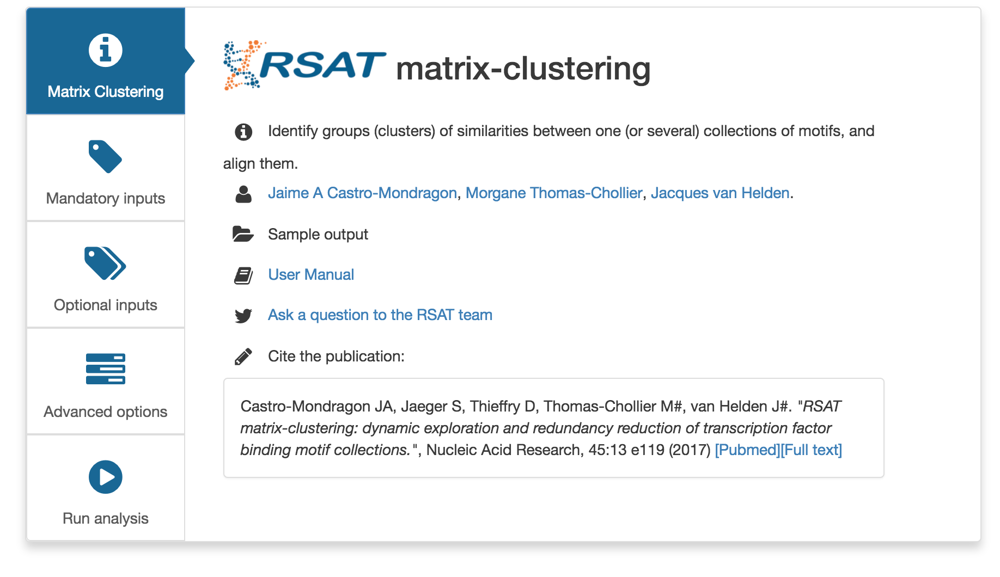
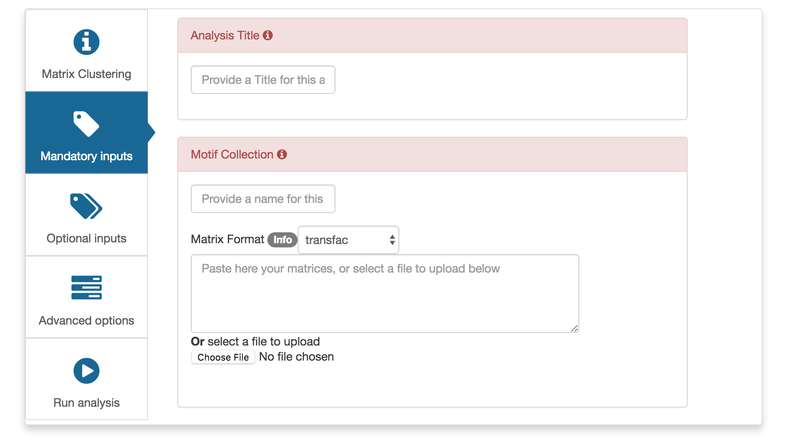
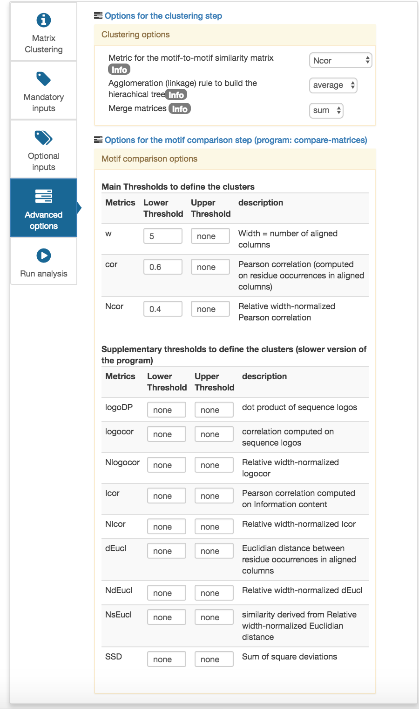

The ChIP-seq technology permits to determine experimentally all the DNA binding locations of a transcription factor, as well as diverse histone modifications related to epigenetic regulatioN.
ChIP-seq consists in the immunoprecipitation of a protein bound to the DNA (Histone with a specific modification or a transcription factor), followed by the sequencing of the immunoprecipitated DNA fragments.
The pulled down sequences are then on aligned to the genome (read-mapping), and the regions in reads (peaks) are detected with a peak-calling software tool. In brief, peaks are considered as regions where the protein of interest is likelt to be bound, given the local enrichment of aligned reads in ChIP-ped samples compared to a given control (so-called “input”).
Figure1: From Castro-Mondragon, et al 2016, genome browser screen shot of a 9 kb region in chromosome 1 of the Arabidopsis thaliana genome. The top tracks show the read coverage profile from a ChIP-seq experiment for MYB3R3 transcription factor (brown) and its control (gray). The bottom panel shows peaks obtained using different bioinformatics tools (peak-callers) with variable parammeters (see (???) for details).
Since 1998 (Helden, Andre, and Collado-Vides 1998), van Helden and collaborators developed the Regulatory Sequence Analysis Tools (RSAT; http://rsat.eu/), a software suite combining specialised tools to analyse regulatory motifs in genomic sequences (Helden, Andre, and Collado-Vides 2000, Thomas-Chollier et al. (2008), Thomas-Chollier et al. (2011), Medina-Rivera et al. (2015), Nguyen et al. (2018)).
Although initial project started with the first fully sequenced eukaryote, the bdding yease Saccharomyces cerevisiae, it soon incorporated other organisms, attempting to cope with the ever-increasing number of sequenced genomes.
In 2015, the Web access was distributed over 6 dedicated servers in order to enable a better management of genomic data, and to rationalise the presentation of some taxon-specific tools (Medina-Rivera et al. 2015).
For the current tutorial we will be using, preferentially, the RSAT::Plants server (http://plants.rsat.eu/), where the Arabidopsis thaliana genome is installed (we will use assembly TAIR10.37).
sequences from bedbed/gff/vcf: Retrieves sequences from a genome given a set of coordinates
peak-motifs: discover exceptional motifs from a set of peak sequences, based on a combination of motif discovery algorithms relying on different criteria (enrichment, positional bias, local enrichment).
matrix-clustering: identify similarities across a collection of motifs.
*MYB3R3 ChIP-Seq peaks (sample ID GSM1482283) can be downloaded from GEO NCBI ftp site
Create a temporary folder on your computer to store the data and results of this tutorial.
Download the peak coordinates in this folder.
Open the (uncompressed) bed file with a spreadsheet like Excel or Office calc and check its content. Information about the bed format can be found on the UCSC Genome Browser.
In a separate window, open a connection to the the RSAT::Plants server server.
In the left-sided menu, find the tool named sequences from bed/gff/vcf (you can either click on view all tools, or use the search box at the top of the tool pane.
Start typing the name of the organism of interest, in this case Arabidopsis. While you do this, the Web form will provide the possible completions for the organism name. Select Arabidopsis thaliana.TAIR10.37.
To specify the genomic coordinates you can either upload a file from your computer (e.g. the file that you downloaded in the previous section), or directly paste the link (e.g. ftp site above) in the URL textbox.
Set the Output option to server.
Optionally, you can select email output in order to be notified of the query submission and completion (you shoud thus receive 2 separate emails for aach query).
Figure2: Screenshot of the sequences from bed/gff/vcf form. Note that the second DEMO will authomatically fill in the data of this tutorial
Click GO. After a few seconds, the server displays a table with links to the input and output files. This includes contains the fasta-formatted sequences of the peaks.
Optionally, you can download the fasta sequences to your computer, to keep a trace of the results. You can also save the URL, that can be used for following steps1.
Figure2: Result page of sequences from bed/gff/vcf.
At the bottom of the result form, the Next step box enables you to automatically submit the result (fasta sequences of your peaks) to a diversity of RSAT tools. Click on the peak-motifs button. This will open a new form where the URL of the fasta sequences has been automatically pasted.
Note: alternatively, a peak-motifsform can also be obtained by clicking on the tool name in the left-sided pannel. The difference is that this will open a fresh form, without transferring the content of the current query. You will thus have to fill up the sequence option manually.
If you ran the last step of the previous section, you should already have a peak-motif form pre-filled with the URL of your fasta sequences. If this is the case, you can skip the two first steps, which are useful if you dispose of your own fasta file to analyse.
1.In the left-sided menu, find the tool peak-motifs.
For the Peak sequences option set, paste the URL of the fasta sequence file obtained in the previous section (alternatively, you can upload the fasta file from your local copy but this will take more time-.
Type an appropriate tittle for the analysis, for example: A. Thaliana MYB3R3 vs GFP - GSM1482283.
Explore the other options! We will discuss them during the training session.
Specify a transcription factor database that will be used to associate the discovered motifs putative bound factors. For this dataset we will select footprintDB-plants. Note that the tool also allows you to upload a custom motif collection in Transfac format.
6.Under Locate motifs and export predicted sites as custom UCSC tracks, in Visualiza peaks ans sites in genome browser, select peak coordiantes specified in fasta headers in bedtools getfasta format, asumming we used the sequences from bed/gff/vcf to retrieve the sequences.
Figure3: Screenshot of the peak-motifs form. The user has to input the required data and information.
7.A link to the results will appear. Anticipated results can be found here.
peak-motifs results include:
Results summary: The set of discovered motifs and the full results can be downloaded.
Sequence composition: Shows the nucleotidic composition of the peaks. Is possible to observed the size distribution of the peaks (mean of 200bps). Two transition tables are show, one for mono-nculeotide compistion and a second one for di-nucleotide compostion.
Discovered motifs by algorithm: The discovered motifs are organized by algorithm, and the motif name is built with the options used to retreive the motifs (k-mer length, markov model, rank of the motif). The motif logo is shown in both orientation and a motif comparison with the selected database is shown.
Note that the algorithms display similar motifs, hence the next step would be to reduce motif redundancy.
RSAT provides the tool matrix-clustering to reduce redundancy in a motif collection. This splecially usefull when several motif-discovery algorithms have been used on a data set, and several highly similar motifs have been found, like is the case in the current protocol.
Open the tool matrix-clustering in the RSAT:Plant server. 
On the title box give a title to the analysis.
Input the motif file containing the resuleting motifs from peak-motifs. 
Options can be tuned to trim the tree comparing the motifs with different thresholds. For the current protocol we recomened using w=5 and Ncor=0.55.
In advanced options, select Ncor (Normalized Pearson Correlation) and average 
Select one output option. Since the program could take some time depending on the size of the collection we recomend using email.
Figure4.4: Screenshot of the matrix-clustering form. The user has to fill the mandatory sections.
A results summary show a table with the number of input motifs together with the used parameters and a link to download the results.
The Logo forest shows a tree conecting the motifs by similarity. There are tow visualization formats, a dynamic browsable one and a low aulaity image allows for a quick overview.
The Individual motifs view shows a table with the input motifs a general information on the,
The Individual cluster view shows general information regarding each cluster.
The Heatmap view sumairzed the result of motif similarities in a heatmap of the clusters.
To obtain the reduced motif set click on the link under dowload root motifs in the summary section.
Helden, J. van, B. Andre, and J. Collado-Vides. 1998. “Extracting regulatory sites from the upstream region of yeast genes by computational analysis of oligonucleotide frequencies.” J. Mol. Biol. 281 (5): 827–42.
———. 2000. “A web site for the computational analysis of yeast regulatory sequences.” Yeast 16 (2): 177–87.
Medina-Rivera, A., M. Defrance, O. Sand, C. Herrmann, J. A. Castro-Mondragon, J. Delerce, S. Jaeger, et al. 2015. “RSAT 2015: Regulatory Sequence Analysis Tools.” Nucleic Acids Res. 43 (W1): W50–56.
Nguyen, N. T. T., B. Contreras-Moreira, J. A. Castro-Mondragon, W. Santana-Garcia, R. Ossio, C. D. Robles-Espinoza, M. Bahin, et al. 2018. “RSAT 2018: regulatory sequence analysis tools 20th anniversary.” Nucleic Acids Res., May.
Thomas-Chollier, M., M. Defrance, A. Medina-Rivera, O. Sand, C. Herrmann, D. Thieffry, and J. van Helden. 2011. “RSAT 2011: regulatory sequence analysis tools.” Nucleic Acids Res. 39 (Web Server issue): 86–91.
Thomas-Chollier, M., O. Sand, J. V. Turatsinze, R. Janky, M. Defrance, E. Vervisch, S. Brohee, and J. van Helden. 2008. “RSAT: regulatory sequence analysis tools.” Nucleic Acids Res. 36 (Web Server issue): W119–127.
The second option is particularly interesting if you have a slow internet connection, since this avoids to download the sequences and upload them for further analysis↩